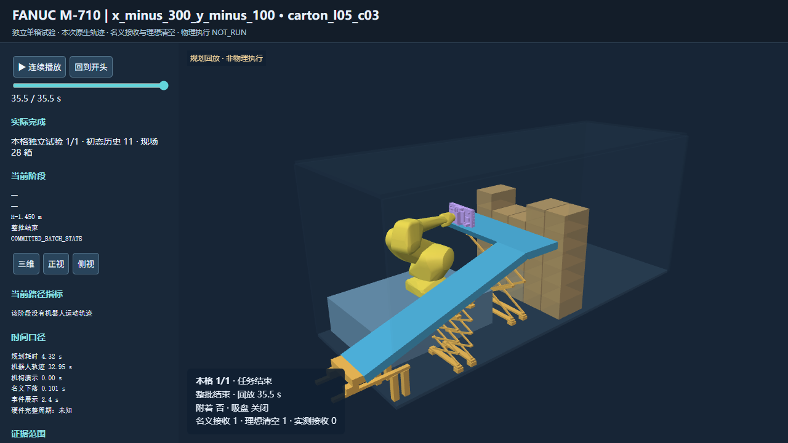

额外沿−X后移200 mm：两箱完整规划均通过
机械臂基座世界坐标 [−1.625, 0.250, 0.600] m。Y保持当前位置，底盘和输送带不动。两次独立历史场景验证完成 2/2，没有物理执行。
| 箱体 | 完整抓放 | 任务墙钟 | 接收高度 / 杯数 | 场景箱数 |
|---|
| l05_c03 | 1/1 | 4.449 s | 1.45 m / 48 | 29 → 28 |
| l04_c02 | 1/1 | 4.461 s | 1.15 m / 48 | 26 → 25 |
两箱都在第一个接收终点通过：接近 → contact及实际杯几何复核 → 附着 → −X抽离 → 接收区验收 → 同位姿释放 → 约50 mm名义下落 → 名义首次触带 → 工具分离 → IDEAL_RECEIVER_DRAIN。delta均为0，带高全程保持。
机器人由本次原生q驱动。名义下落和理想清空是显式假设，实测接收为0。任务墙钟不是机器人动作周期。每箱历史台账分别为11箱和14箱，两次场景不能拼成连续卸箱结果，也不能据此修改原实验17/40成功率。

逐阶段验证与全部成本 · 回放浏览器验证 · 源码与测试记录 · 原始记录
实测源码 e2043983e6f19e63f8ca475963e0801e1d26b982
qualification_status=NOT_EVALUATED · continuous_swept_proof=false
physical_execution=NOT_RUN · execution_ready=false